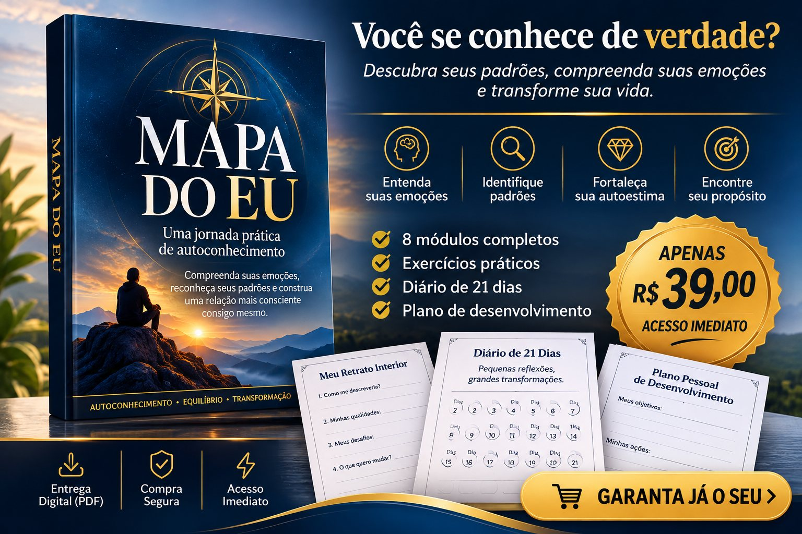

Descubra seus padrões, compreenda suas emoções e comece a construir uma relação mais consciente consigo mesmo.

GARANTA JÁ O SEUPagamento único de R$ 39,00 · Acesso imediato em PDF
Você se identifica?
Nem sempre conseguimos explicar por que reagimos de determinada maneira, repetimos certos padrões ou temos dificuldade para tomar decisões. O primeiro passo é aprender a observar a si mesmo — e o Mapa do Eu foi criado para acompanhar você nesse processo, com perguntas orientadas e exercícios práticos.
Aprenda a nomear o que sente em vez de apenas tentar esconder.
Observe o que acontece antes de um comportamento se repetir.
Diferencie quem você é do que ouviu sobre si ao longo da vida.
Reflita sobre valores, propósito e próximos passos realistas.
Conteúdo
Cada módulo combina uma explicação acessível, perguntas de reflexão, exercícios de preenchimento e um desafio prático.
Além da leitura
Investimento único
Pagamento único · Material digital em PDF · Acesso imediato
QUERO COMEÇAR MINHA JORNADAConhecer a si mesmo é um processo. O primeiro passo é fazer perguntas melhores.
Após a confirmação do pagamento, o acesso ao PDF é liberado automaticamente na plataforma de compra.
Os dois. É um workbook: traz explicações curtas e espaços para você escrever suas respostas, no seu ritmo.
Sugerimos de 10 a 20 minutos por atividade, em um ambiente tranquilo. Você pode voltar às atividades quando fizer sentido.
Não. O Mapa do Eu é um material educativo e de desenvolvimento pessoal. Não realiza diagnóstico e não substitui psicoterapia, psicanálise, atendimento médico ou qualquer acompanhamento profissional. Se uma atividade provocar sofrimento intenso, interrompa e procure apoio profissional.
Sim. O PDF foi pensado em formato A4 para leitura na tela ou impressão.
Material educativo e reflexivo de autoconhecimento e desenvolvimento pessoal. Não substitui acompanhamento psicológico, psicanalítico ou médico, e não garante resultados específicos.
© Mapa do Eu